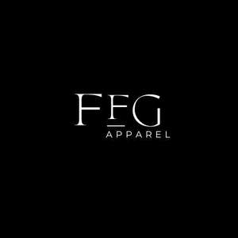

Trade Mark Journal No.2025/011 14 March 2025
UK00004168826 4 March 2025 (25)

- Class 25
- Exercise wear; Sports wear; Clothing for leisure wear; Leisure wear; Tennis wear; Ladies wear; Headgear for wear; Casual wear; Head wear; Gym suits; Clothes for sport; Triathlon clothing; Sashes for wear; Clothing for gymnastics; Jogging outfits; Jogging bottoms [clothing]; Jogging sets [clothing]; Gym shorts; Sports clothing [other than golf gloves]; Clothing for sports; Sports clothing; Gymwear; Dance clothing; Leisure clothing; Jackets being sports clothing; Moisture-wicking sports pants; Golf clothing, other than gloves; Sports pants; Jogging suits; Sports garments; Trainers [footwear]; Jogging pants; Jumper dresses; Clothes; Jumper suits; Jumpers [sweaters]; Shorts [clothing]; Jumpers; Denims [clothing]; Clothing; Knitwear [clothing]; Jackets [clothing]; Playsuits [clothing]; Cashmere clothing; Headbands [clothing]; Jumpers [pullovers]; Linen clothing; Tops [clothing]; Beach clothes; Jerseys [clothing]; Bottoms [clothing]; Silk clothing; Embroidered clothing; Men's clothing; Polo neck jumpers; Ready-to-wear clothing; Ties [clothing]; Furs [clothing]; Clothing of leather; Rainproof clothing; Coats for men; Casual clothing; Underclothing for women; Turtleneck shirts; Parts of clothing, footwear and headgear; Men's and women's jackets, coats, trousers, vests; Men's underwear; Ladies' clothing; Ladies' dresses; Womens' undergarments; Ladies' underwear; Casual jackets; Caps [headwear]; Baseball caps; Bonnets [headwear]; Socks and stockings; Yoga socks; Swimwear; Beachwear; Swimsuits; Bikinis; Monokinis; Lingerie; Shapewear; Underwear; Loungewear; Bras; Strapless brassieres; Sports bras.
lea fonclaud